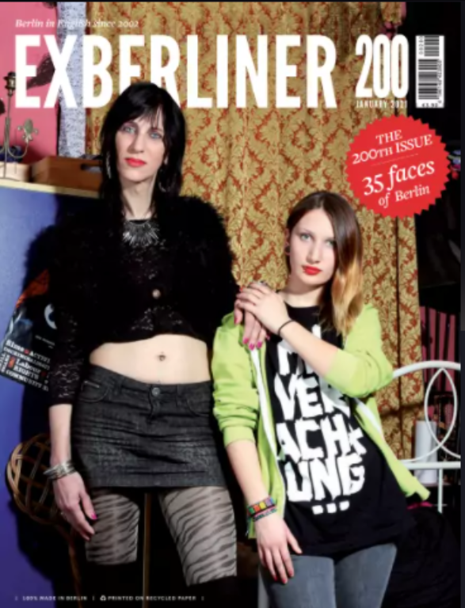
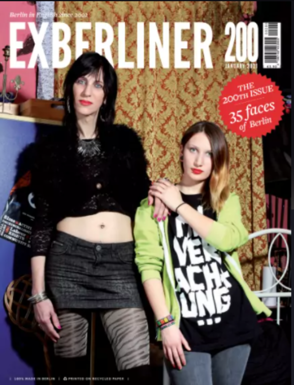

I did a 3-month internship as a Junior Reporter for
Exberliner Magazine (Print issues 200, 201 & 202).
Exberliner is an English-language magazine published in Berlin that was launched in 2002. It is published monthly and available at newsstands around the city or by subscription. The print issue offers cultural listings, reviews, journalistic articles and opinion columns. The website is also continually updated. Click here for my articles that were published online.
My Role:
• Involved in all aspects of the print production process.
• Investigative Journalism (interviewing, writing, fact-checking).
• Editorial Shaping.
• Copy Editing.
• Manage social media account.

 
